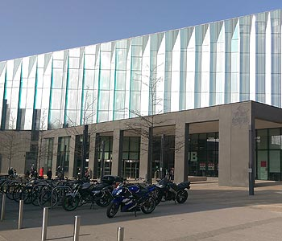

MMU Information
Manchester Metropolitan University
Manchester Metropolitan University is at the heart of Manchester on one of the vibrant road called Oxford Road, the main campus is All Saints, which consist of Geoffrey Manton, Art, Business and the Library buildings. Our main campus is walking distance from the city centre.
The Students
The total population of students that study with us are 37,000 and counting. In UK, we are very popular when it comes to applications, each year we receive over 57,000 applications each year. In regards to the courses, we have over 1,000 courses, which lead to strong professional careers after graduation. We also have well established leading researchers once they finish our postgraduates and PhD degrees.
Industry Links
As intuition, we give all students from all backgrounds a real chance to make something out of themselves whether they are from a low or high household income. In addition, over 70 percent of graduates stay in North West to help the growth of the economy in Manchester. Finally, we have well established connections with the industry around Manchester to give our graduates the best possible career aspects.